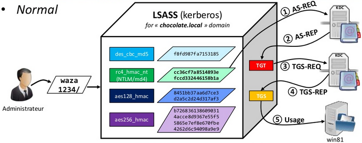

1. The KDC long-term secret key (domain key)
Under the mysterious krbtgt account (rc4, aes128, aes256, etc)
Needed to sign Microsoft specific data in "PAC", encrypt TGT
2. The Client long-term secret key (derived from password)
Under the user/computer/sever account
Needed to check AS-REQ, encrypt session key
3. The Target/Service long-term secret key (derived from password)
Under the computer/sever account
Needed to countersign data in "PAC" of TGS, encrypt TGS
